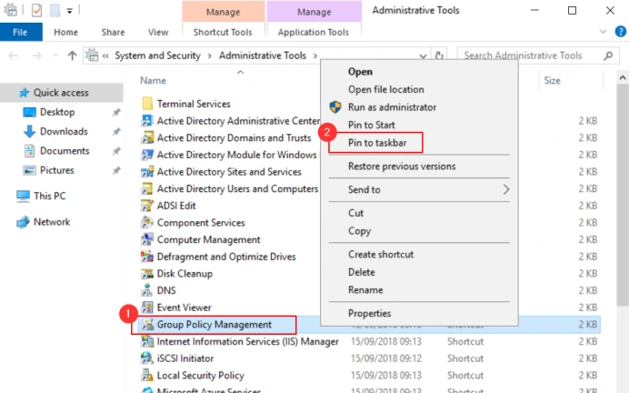
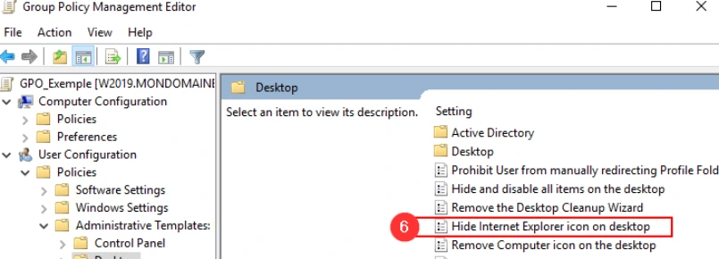

Module 03 — Stratégies de groupe¶
La transcription du support Drive et l’aide pédagogique sont séparées pour rendre leur provenance explicite.
SOURCE DRIVE · TRANSCRIPTION DU SUPPORT
Le contenu des documents du dossier TSSR est transcrit ci-dessous, page par page. Les textes et tableaux sont intégrés à la page Web. Aucun fichier PDF, aucune diapositive entière ni aucune reproduction de page n’est affiché. Seuls des croquis ou visuels isolés et vérifiés peuvent accompagner la transcription. Les versions et les consignes restent celles des supports de formation. Les compléments IA sont conservés dans leur onglet distinct.
Support · Module 03 – Support de cours · 11 pages transcrites
Module 03 – Les stratégies de groupe
Objectifs
- Appréhender les stratégies de groupe (GPO)
Le fonctionnement des GPO
Descriptif
Les GPO (Group Policy Object) ou stratégies de groupes sont utilisés dans un domaine AD pour paramétrer les ordinateurs et les utilisateurs.
| Les + | Les − |
|---|---|
| Ajoute de la sécurité dans l’entreprise | La configuration peut être complexe |
| Automatisation d’actions | Le nombre de paramètres est élevé |
| Réduction des tâches d’administration | Dépendant des versions système |
Les types de stratégie
Les conditions d’utilisation et d’application varient selon le type de stratégie.
| Type | Conditions et portée |
|---|---|
| La stratégie de groupe | Nécessite un contexte de domaine. S’applique sur un ou des ensembles d’éléments. En cas de conflits, elle l’emporte sur la stratégie locale. |
| La stratégie locale | Est utilisable dans et hors contexte de domaine. Se configure poste par poste. |
Le fonctionnement des GPO
Du registre aux stratégies
- Chaque paramètre modifié va impacter les machines de votre domaine.
- 2 méthodes :
- Via le registre
- Via la console MMC traitant des stratégies de groupes.
Le fonctionnement des GPO
Application des stratégies
- Comment sont appliquées les GPO :
Pour les contrôleurs de domaine, toutes les 5min
Par défaut toutes les 90min à plus ou moins 30min près.
Application d’une stratégie
Commande gpdupate sur le
Passage en mode manuel
poste visé par les
stratégies.
- Les extensions côté client (CSE) sont les composants du poste client qui :
- Récupèrent les stratégies mises à disposition par le contrôleur de domaine.
- Intègrent et appliquent les paramétrages qui s’y trouvent.
Le fonctionnement des GPO
Les stratégies par défaut
Après l’installation d’un domaine, deux stratégies sont configurées par défaut :
| Stratégie | Liaison | Paramètres de sécurité |
|---|---|---|
| Default Domain Policy (DDP) | Racine du domaine | Utilisateurs du domaine |
| Default Domain Controller Policy | UO Domain Controllers | Contrôleurs de domaine |
Le ciblage des stratégies
- Le ciblage permet de définir le ou les objets soumis à cette règle.
- La liaison d’une stratégie se fait via un site Active Directory, un domaine ou une unité d’organisation.
- Une fois liée, la stratégie s’applique sur les objets ordinateurs pour les paramètres ordinateur et sur les objets utilisateurs pour les paramètres utilisateur.
La note du support distingue la liaison à un conteneur d’une affectation directe à un groupe.
Le ciblage des stratégies
La console de gestion
- Conteneurs de liaisons
- Liaisons de stratégies
- Conteneur des stratégies du domaine
Ordre de traitement
Priorités et héritage
- Les stratégies sont héritées du parent vers l’enfant.
- Les stratégies héritées sont appliquées avant celles du conteneur courant.
- Les stratégies dont le numéro d’ordre est le plus élevé sont d’abord appliquées au sein d’un même conteneur.
- Les stratégies marquées Appliqué deviennent prioritaires.
Le ciblage des stratégies
Ordre de traitement
Si les stratégies définissent des paramètres
Un objet peut être soumis à plusieurs
distincts, la résultante est le cumul de ces
stratégies
paramètres
Valeurs conflictuelles
/ Paramètres complémentaires
Si plusieurs stratégies appliquant des valeurs
La dernière stratégie appliquée l’emporte
distinctes d’un même paramètre à un même
objet existent, c’est l’ordre d’application qui
La plus proche de l’objet
définira la valeur prise en compte.
Le ciblage des stratégies
Les possibilités de restrictions de liaison
d’héritage
- S’active sur un conteneur.
- Annule la prise en comptes des stratégies héritées de conteneurs parents.
- Impacte toutes les stratégies héritées. Le blocage
- Permet d’outrepasser le blocage d’héritage.
- Rend la GPO prioritaire Le paramètre
Appliqué
- De sécurité
- Restreint la lecture et l’application de GPO.
- Des règles de contrôle d’accès pour accorder ou ôter des privilèges.
- WMI : limiter l’application grâce aux requêtes WMI Les filtres
Les stratégies de groupe
Le ciblage des stratégies
Ordre de traitement
Si les stratégies définissent des paramètres Un objet peut être soumis à plusieurs distincts, la résultante est le cumul de ces stratégies paramètres
Valeurs conflictuelles
/
Paramètres
complémentaires
Si plusieurs stratégies appliquant des valeurs
La dernière stratégie appliquée l’emporte distinctes d’un même paramètre à un même
La plus proche de l’objet objet existent, c’est l’ordre d’application qui
définira la valeur prise en compte.
11
11
Les stratégies de groupe
Le ciblage des stratégies
Les possibilités de restrictions de liaison
Le blocage • S’active sur un conteneur.
d’héritage •• AnnuleImpactelatoutesprise enles comptesstratégiesdeshéritées.stratégies héritées de conteneurs parents.
Le paramètre • Permet d’outrepasser le blocage d’héritage.
Appliqué • Rend la GPO prioritaire
• De sécurité
Les filtres •• RestreintDes règlesladelecturecontrôleet l’applicationd’accès pourdeaccorderGPO. ou ôter des privilèges.
• WMI : limiter l’application grâce aux requêtes WMI
12
12La mise en œuvre des stratégies
Les domaines impactés
Les domaines impactés sont représentés ci-dessous, nous les verrons par la suite en détail
Déploiement applicatif
Scripts
Sécurité
Configuration
- Système
- De composants intégrés
- D’applications tierces
La mise en œuvre des stratégies
Les paramètres de stratégie de groupe
Un point de configuration est associé à un paramètre de GPO et dispose des caractéristiques suivantes
Nom Etat Support Description Commentaire
La mise en œuvre des stratégies
Les modèles d’administration
Ils permettent de configurer
- Le système d’exploitation
- Des composants système
- Des outils Microsoft
Fichiers stockés dans le partage SYSVOL
Démonstration
Principe de redirection
Les dossiers du profil utilisateur sont stockés sur un emplacement réseau.
Documents
Serveur de fichiers
Bureau
Menu démarrer
Contacts
Stratégie de redirection des dossiers
Les redirections s’appliquent aux objets utilisateurs.
Paramètres Options
- Les nouveaux utilisateurs ne bénéficieront pas de redirection de dossiers.
- Les dossiers redirigés des utilisateurs se trouveront dans le même sous-dossier
Créer un dossier pour chaque utilisateur sous le chemin d’accès racine.
- Chaque utilisateur disposera de son propre sous-dossier. Avancé : En fonction de leur appartenance à des groupes, les dossiers des utilisateurs seront stockés dans des emplacements réseau différents
- Arrêt de la redirection
| Paramètre | Options |
|---|---|
| De base | Les dossiers redirigés de l’ensemble des utilisateurs seront stockés dans un même emplacement réseau. |
| Avancé | Selon leurs groupes, les utilisateurs ont des emplacements réseau différents. |
| Redirection vers le répertoire d’accueil | Les nouveaux utilisateurs ne bénéficieront pas de redirection de dossiers, selon le support. |
| Créer un dossier pour chaque utilisateur | Chaque utilisateur dispose de son sous-dossier sous le chemin racine. |
| Rediriger vers l’emplacement suivant | Les dossiers redirigés des utilisateurs se trouvent dans le même sous-dossier. |
| Redirection vers l’emplacement du profil local | Arrêt de la redirection. |
Le déploiement d’imprimantes par GPO
- Depuis le Gestionnaire d’impression, il est possible de déployer des imprimantes par GPO.
- Les informations à renseigner seront :
- La stratégie existante ou nouvelle à utiliser.
- Le type d’objet ciblé par le déploiement
TP
Conclusion
- Vous connaissez les stratégies de groupe (GPO)
Référence du document : 10ZzrWSG0Yv4qDn5q0uoc9aIXFqFdfMX4 · SHA-256 6a79d7f43db84631…
Démonstration · Fiche démo 1 - Appréhender la console GPMC · 5 pages transcrites
Appréhender la console GPMC
Démonstration 01 du module 03
Cette démonstration décrit les différents points relatifs à la console de GPO
Déroulement
- Prérequis
Avoir installé et configuré une VM Windows Server.
Avoir renommé correctement la VM.
Avoir attribué une IP fixe à la VM.
L’objectif de la GPO qui va être créée est de cacher l’icône Internet Explorer pour les utilisateurs d’une OU spécifique.
- Ouverture de la console MMC
Après l’ouverture de session sur la session du domaine, cliquer sur le menu démarrer (1), puis sur la tuile Windows Administrative Tools (2).
- Ajout du raccourci dans la barre des tâches
Dans l’explorateur qui vient de s’ouvrir, faire un clic droit sur la ligne Group Policy Management (1), puis sur le menu Pin to taskbar (2). L’icône (3) apparaît.
- Accès à la console GPMC
Cliquer sur le raccourci précédemment créé afin de voir la console des GPO apparaître.


- Création GPO utilisateur
Faire un clic droit sur la ligne Utilisateur (1) ou tout autre OU, puis sur le menu Create GPO in the domain, and lin kit here… (2). Indiquer le nom de la GPO (3) puis cliquer sur le bouton OK. La GPO apparaît (4).
- Ajout des paramètres à la GPO
Faire un clic droit sur la ligne GPO_Exemple (1), puis sur le menu Edit (2). Aller dans les menus User Configuration (3) , Administrative Template (4), Desktop (5). Double cliquer sur la ligne Hide Internet Explorer icon on desktop (6). Cocher le bouton radio Enabled (7) puis cliquer sur le bouton Apply (8). Enfin cliquer sur le bouton OK.


Étapes illustrées dans le support
- Dans Hide Internet Explorer icon on desktop, sélectionner Enabled puis Apply.
- Le paramètre illustré masque l’icône Internet Explorer du Bureau et de la barre de lancement rapide pour l’utilisateur.
Référence du document : 1TdIMQLVdwwzgRk6xk51jxLkz34IsyYFX · SHA-256 9f4795eaed184eb0…
Énoncé · Enoncé du TP - Prise en main des stratégies de groupe · 2 pages transcrites
Prise en main des stratégies de groupes
TP du Module 03 – Active Directory
Avant de démarrer ce TP, il convient d’avoir suivi les vidéos du module 3 et réalisé les TP précédents.
Durée estimée
30 minutes à 1 heure
Énoncé
Prérequis :
- Avoir réalisé le TP précédent du Module 02.
Mise en œuvre des GPO
- Trouvez et validez le paramètre adapté (utilisateur ou ordinateur).
- Définissez les stratégies de groupe nécessaires et le point de liaison (UO) pour leur application.
- Regroupez les paramètres du même type dans une seule GPO.
- Testez-en le bon fonctionnement avec les comptes utilisateurs adéquats. Pour l’ensemble des utilisateurs du domaine
- La fonctionnalité de chiffrement EFS doit être désactivée.
- Le pare-feu système doit être désactivé.
- Internet Explorer sera client proxy du serveur 172.28.10.248 en écoutant sur le port 8080.
- Le mot de passe devra compter au moins 5 caractères et il sera à changer tous les 5 jours.
- Aucune exigence de complexité de mot de passe n’est envisagée.
Pour les membres du service Commercial
- Le partage Prospects doit automatiquement être disponible dans l’explorateur de fichiers, et dès l’ouverture de session. Pour les membres du service Production
- L’imprimante HP Color LaserJet Pro MFP M477 sera automatiquement installée. Pour les Secrétaires
- Le fond d’écran sera commun (logo de l’entreprise).
Bonus :
- Automatiser l’installation d’Acrobat Reader (paquet .msi) pour les secrétaires.
- Le répertoire Documents des utilisateurs sera déporté sur W19-SRV1 (excepté pour les membres du service Informatique).
- Ouverture de session limitée de 9h à 18h.
- Fermeture de session obligatoire après 18h pour les intérimaires.
Référence du document : 1L0CB2J9fOsTuLTzAC1-vKfl-v5mhGGjG · SHA-256 a9bcc6275473bed3…
Correction · Solution du TP - Prise en main des stratégies de groupe · 6 pages transcrites
Correction originale : à consulter après avoir tenté l’exercice.
Prise en main des stratégies de groupes
TP du Module 03 – Active Directory
Avant de démarrer ce TP, il convient d’avoir suivi les vidéos du module 3 et réalisé les TP précédents.
Durée estimée
30 minutes à 1 heure
Solution
Prérequis :
- Avoir réalisé le TP précédent du Module 02.
Mise en œuvre des GPO
- Trouvez et validez le paramètre adapté (utilisateur ou ordinateur).
- Définissez les stratégies de groupe nécessaires et le point de liaison (UO) pour leur application.
- Regroupez les paramètres du même type dans une seule GPO.
- Testez-en le bon fonctionnement avec les comptes utilisateurs adéquats. Pour l’ensemble des utilisateurs du domaine
- La fonctionnalité de chiffrement EFS doit être désactivée.
- Le pare-feu système doit être désactivé.
- Internet Explorer sera client proxy du serveur 172.28.10.248 en écoutant sur le port 8080.
- Le mot de passe devra compter au moins 5 caractères et il sera à changer tous les 5 jours.
- Aucune exigence de complexité de mot de passe n’est envisagée.
Pour les membres du service Commercial
- Le partage Prospects doit automatiquement être disponible dans l’explorateur de fichiers, et dès l’ouverture de session.
Pour les membres du service Production
- L’imprimante HP Color LaserJet Pro MFP M477 sera automatiquement installée.
Pour les Secrétaires
- Le fond d’écran sera commun (logo de l’entreprise).
Étapes illustrées dans le support
- Dans GPO_Secretaire, ouvrir Configuration utilisateur, Stratégies, Modèles d’administration, Bureau, Bureau, Papier peint du Bureau.
- Activer le paramètre, renseigner le chemin du fichier de fond d’écran puis choisir le style Center.
- Dans Group Policy Management, vérifier le lien de GPO_Secretaire sur l’UO SECRETAIRE. La capture affiche le filtrage Utilisateurs authentifiés et aucun filtre WMI.
Référence du document : 184DIHm_-zbA5j2Skl4Zxm55YXj5sW70b · SHA-256 608287ee01bf54d8…
Complément IA / externe au cours — fiche pédagogique du portail
Cette fiche contient une reformulation et des aides d’apprentissage rédigées par IA. Elle est distincte de la transcription des documents du Drive et ne la remplace pas. Les schémas de synthèse de cette fiche sont des illustrations IA / externes au cours, sauf les captures explicitement attribuées à un document source.
Les GPO appliquent des paramètres aux utilisateurs et ordinateurs du domaine. Elles réduisent les interventions poste par poste et permettent de définir des règles cohérentes. Le choix de la portée dépend du type de paramètre, du conteneur de l’objet et de l’ordre de traitement.
Objectifs¶
- Prévoir l’ordre de traitement d’une stratégie et distinguer objet GPO, lien et filtrage.
- Choisir la branche utilisateur ou ordinateur selon le réglage.
- Appliquer les réglages de laboratoire aux utilisateurs et postes visés.
- Vérifier le résultat avec un compte ciblé et un compte exclu.
De la stratégie locale au domaine¶
La stratégie locale est utilisable avec ou sans domaine. Les stratégies de domaine sont créées dans GPMC et liées à un site, un domaine ou une UO. Les extensions clientes récupèrent la stratégie, puis appliquent ses réglages. Les paramètres ordinateur se traitent notamment au démarrage et les paramètres utilisateur à l’ouverture de session. Le support mentionne un rafraîchissement ordinaire de 90 minutes avec variation et un intervalle de 5 minutes pour les contrôleurs.
Le modèle standard de traitement suit Local → Site → Domaine → UO, du parent vers l’enfant. Les paramètres distincts se cumulent. Les valeurs concurrentes sont départagées par leur priorité. Dans une même UO, le lien d’ordre 1 a la priorité normale. Un lien forcé traverse le blocage de l’héritage. Le filtrage de sécurité contrôle la lecture et l’application, tandis qu’un filtre WMI vérifie une condition sur la machine. Traitement des GPO dans Windows.
Le domaine fournit une Default Domain Policy liée à sa racine et une Default Domain Controllers Policy liée à l’UO Domain Controllers. GPMC distingue le conteneur des objets GPO et les liens qui les appliquent. Créer un objet sans lien permet de le préparer. Pour prévoir sa portée, suivre le lien, l’UO effective, les permissions de filtrage et l’état des sections utilisateur et ordinateur.
Choisir le bon réglage¶
Les paramètres couvrent scripts, déploiement d’applications, sécurité, système et composants. Les modèles d’administration décrivent les réglages, leur prise en charge et leur effet. Le support présente la redirection des dossiers utilisateur sur un serveur de fichiers. En mode de base, les utilisateurs suivent une même configuration. Le mode avancé choisit des emplacements par groupe. Prévoir les droits de partage et NTFS avant de faire pointer Documents vers ce serveur.
Dans le Gestionnaire d’impression, une file peut être déployée avec une GPO existante ou nouvelle, sur les ordinateurs ou sur les utilisateurs. Lier la règle à l’UO où sont les objets qui reçoivent le réglage. Un déploiement applicatif utilise un paquet accessible depuis un chemin UNC au contexte qui l’installe.
Illustration IA / externe au cours — choix de portée d’un réglage.
Tester et diagnostiquer¶
Le support écrit gpdupate. La commande utilisable est gpupdate. Certains réglages prennent effet après fermeture de session ou redémarrage. Tester une cible et un compte exclu, puis comparer la configuration réellement appliquée et les stratégies filtrées. Pour un lecteur ou une imprimante absents, vérifier aussi la ressource et les droits réseau indépendamment de la GPO.
TP guidé — Mettre en œuvre les stratégies de groupe¶
Durée du support. Trente minutes à une heure, puis bonus. Reprendre les UO, groupes et ressources du module 2. Dans GPMC, repérer le conteneur des stratégies et les liens existants. Pour chaque consigne, noter le réglage, la branche, la cible, le compte utilisé et la preuve du résultat.
A. Appliquer les réglages communs du laboratoire¶
| Besoin du TP | Portée et résultat à vérifier |
|---|---|
| Désactiver EFS | Paramètre ordinateur sur les postes du scénario. Vérifier le résultat du réglage EFS dans le laboratoire. |
| Désactiver le pare-feu | Paramètre ordinateur sur les profils prévus par le TP isolé. Contrôler l’état des profils concernés. |
| Proxy Internet Explorer | Cible utilisateur avec 172.28.10.248:8080. Le navigateur et ses options sont ceux de la maquette historique. |
| Mot de passe du domaine | Portée domaine, longueur de 5 caractères, changement tous les 5 jours et complexité désactivée dans l’exercice. |
Regrouper les réglages du même type selon le TP, puis lier à la portée appropriée. Les valeurs du pare-feu et du mot de passe servent à l’observation dans le laboratoire. Elles ne constituent pas des valeurs de déploiement pour une organisation.
B. Appliquer les réglages propres aux métiers¶
- Commercial. Déployer le lecteur Prospects à l’ouverture de session pour les membres du groupe prévu. Tester la présence du lecteur et l’accès au partage
\\W19-SRV1\Prospects. Une GPO appliquée ne donne pas à elle seule les droits SMB et NTFS. - Production. Déployer la file du serveur d’impression pour les utilisateurs visés et ouvrir une session de test. L’énoncé cite le modèle M477, alors que les modèles du module 2 diffèrent. Relever le nom de la file Production effectivement configurée avant le déploiement.
- Secrétaires. Dans la branche utilisateur de
GPO_Secretaire, ouvrir Modèles d’administration → Bureau → Bureau → Papier peint du Bureau. Renseigner un chemin d’image lisible, choisir le style centré du corrigé et vérifier le lien sur l’UO cible. - Pour chaque réglage, comparer le résultat d’un compte concerné avec un compte hors cible. Si un lecteur ou une imprimante manque, vérifier aussi le chemin réseau, les permissions et la file.
C. Traiter les bonus de l’énoncé¶
- Acrobat Reader. Préparer le paquet MSI sur un chemin UNC lisible par le contexte de déploiement. Lier à la portée des secrétaires et vérifier le traitement de l’installation lors du prochain cycle adapté.
- Documents. Rediriger vers le serveur de fichiers
W19-SRV1avec un périmètre qui exclut Informatique. Examiner le chemin obtenu et les droits des deux profils. - Horaires. Limiter les nouvelles ouvertures de session à 9 h–18 h. Pour les intérimaires, vérifier séparément la fermeture effective d’une session déjà ouverte à 18 h. Les restrictions d’horaires et le réglage de déconnexion des sessions SMB ne prouvent pas à eux seuls la fermeture d’une session interactive. Déconnexion réseau à l’expiration des heures de connexion
À retenir¶
Un objet GPO devient effectif selon son lien, son ciblage et le traitement des réglages. gpresult montre la stratégie reçue. Une seconde preuve doit montrer que le réglage change l’usage attendu.
Mini-quiz — 5 questions¶
- Une GPO existe sans lien. Est-elle appliquée ?
- Quel type de lien peut traverser un blocage d’héritage ?
- Où viser le réglage du fond d’écran des secrétaires ?
- Pourquoi vérifier séparément le chemin Prospects ?
- Comment distinguer le test de la GPO et celui de son effet ?
Réponses commentées
- Elle doit être liée à une portée pertinente, puis passer les conditions d’application.
- Un lien forcé. Le traitement des autres stratégies dépend de leur portée et ordre.
- Dans la configuration utilisateur, avec un lien et un filtrage qui atteignent les comptes concernés.
- La stratégie peut présenter le lecteur alors que le partage ou NTFS refuse l’accès.
- Lire gpresult dans le contexte attendu, puis utiliser la ressource ou observer le réglage avec un compte de test.
Pour pratiquer et réviser¶
- Énoncés et corrections
- Démonstrations
- Fiche de révision
- Kahoot existant
- Sommaire de Services réseau en environnement Microsoft
Provenance pédagogique¶
Le support M03, la démonstration GPMC et la paire de TP fondent la progression. Les réglages de sécurité et les différences de modèles d’impression restent liés à leur contexte de laboratoire.
M03 — Stratégies de groupe
20 questions
Teste tes connaissances sur ce module.